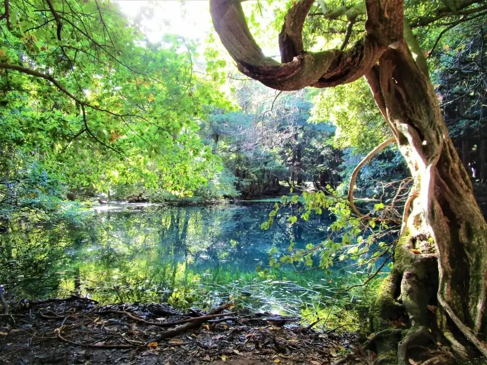
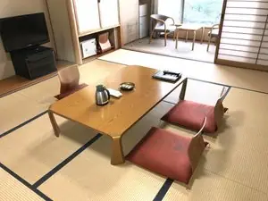
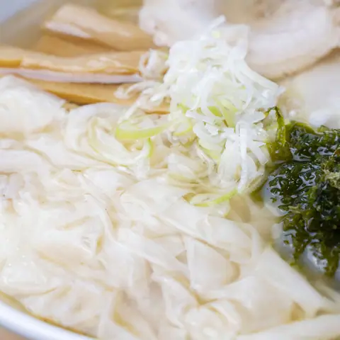
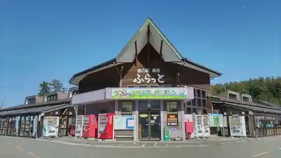
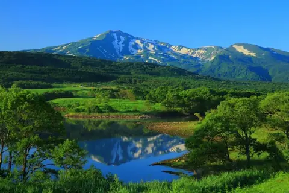
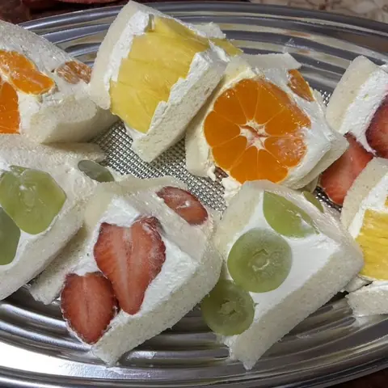

Japan / Yamagata / Yuza
Yuza · Yamagata
Yuza
Highlighted on the Yamagata map.

Yuza Town Hall





Sights · Things to do · Places to eat · Places to stay · Day-to-day services
Nearby in Yamagata: ← Yonezawa · Asahi →
Other towns: Asahi · Funagata · Higashine · Iide · Kahoku · Kaminoyama · Kaneyama · Kawanishi · Mamurogawa · Mikawa · Mogami · Murayama · Nagai · Nakayama · Nanyo · Nishikawa · Obanazawa · Oe · Oguni · Ohkura · Oishida · Sagae · Sakata · Sakegawa · Shinjo · Shirataka · Shonai · Takahata · Tendo · Tozawa · Tsuruoka · Yamagata City · Yamanobe · Yonezawa
All towns in Yamagata · Back to all prefectures